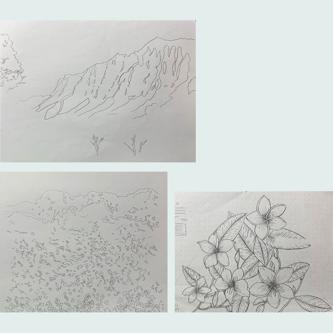

Client: School Project
Project Type: Package Design
Competencies: Illustration, structure, and visual communication
Softwar: Illustrator, Photoshop
Overview
"ala onaona" is incense brand which is handmade in Hawaii. "ala" means "path" and "onaona" means "frangance" in Hawaiian. The brand is inspired by the natural beauty of Hawaii and the spiritual significance of incense.
Design Explorations

Challenge
The challenge of creating a package design is to make it visually and functionally unique while maintaining usability.
Solution
The box design allows the outer box to slide down, pushing out the incense inside. Furthermore, while each of the three scents has a distinct main color, using a shared color ensures visual consistency.

option 1:
Nice has a Mediterranean climate throughout the year, and you can see many bougainvilleas which blooms in the warm regions. There are also art museums and churches of various styles, creating an elegant atmosphere. Bougainvillea seedlings represent the luxury of Nice.
option 2:
Nice is famous for its blue chairs and blue&white striped parasols. The font is slightly rounded to represent the relaxed atmosphere of Nice, but to avoid being too cute, we chose letters with a modulated tone that have both thin and thick parts.
option 3:
This is a bronze statue of four horses pulling Apollo, located in Place Massena in Nice. Apollo traveled from east to west in the morning in a chariot pulled by four horses, bringing sunlight to the west and driving away the darkness of night. The top of the horse represents the light of the sun.
The Final
I chose this logo because it symbolizes both cultural heritage and universal values. Inspired by the Apollo statue in Place Massena, the design conveys strength, light, and forward movement. Its bold yet simple form ensures strong recognition, while the sun rays emphasize positivity and energy. The radiating lines above the horse symbolize the Mediterranean sun and its brightness.